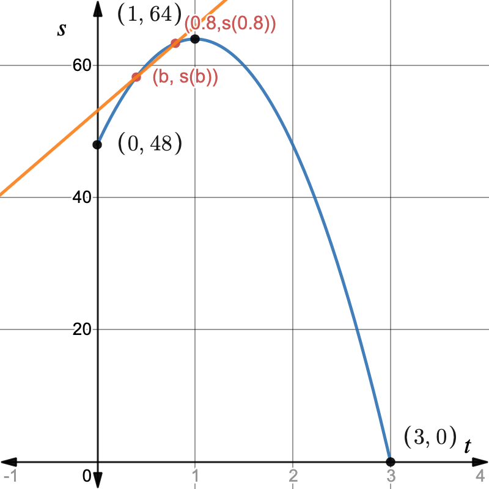

Suppose that the height \(s\) of a ball at time \(t\) (in seconds) is given in feet by the formula \(s(t) = 64-16(t-1)^2\text{.}\) A graph of \(s(t)\) for \(0\leq t\leq 3\) is:

Let’s find the average velocity of the ball on intervals approaching \(t=0.8\text{.}\)
On \([0.8,1.2]\text{,}\) the average velocity is
\begin{equation*}
AV_{[0.8,1.2]} = \frac{s(1.2)-s(0.8)}{1.2-0.8} = \frac{63.36-63.36}{0.4} = 0 \text{ ft/sec. }
\end{equation*}
Note that this average velocity is on an interval of length \(h=0.4\) starting at \(t=0.8\text{.}\) The ball has zero average velocity, but we know from the graph that the ball is not stationary during this interval.
If we calculate the average velocity on \([0.8,0.9]\text{,}\) \([0.8,0.81]\text{,}\) \([0.8,0.801]\text{,}\) and \([0.8,0.8001]\text{,}\) corresponding to \(h=0.1, 0.01\text{,}\) and \(0.001\text{,}\) as well, we have the average rates of change in Table 4.1.2 on intervals that approach the time \(t=0.8\text{.}\)
| Interval | \([0.8,1.2]\) | \([0.8,0.9]\) | \([0.8,0.81]\) | \([0.8,0.801]\) | \([0.8,0.8001]\) |
| Avg. Vel. (ft/sec) | 0 | 4.8 | 6.24 | 6.384 | 6.3984 |
Notice that we can’t use our average velocity formula to calculate the exact instantaneous velocity at time \(t=0.8\text{,}\) as \(AV_{[0.8,0.8]}\) is undefined. However, the table above leads us to think that the instantaneous velocity of the ball at \(t=0.8\) seconds is probably very close to 6.4 ft/sec.
What were we doing in the previous calculations? We were taking the limit as \(h\to 0\) of \(AV_{[0.8,0.8+h]}\text{.}\) Note however that we only used positive values for \(h\text{,}\) so really we were taking \(h\to 0^+\text{.}\) Let’s see what happens when we consider \(h\to 0^-\text{.}\)
On \([0.4,0.8]\text{,}\) the average velocity is
\begin{equation*}
AV_{[0.4,0.8]} = \frac{s(0.8)-s(0.4)}{0.8-0.4} = \frac{63.36-58.24}{0.4} = 12.8 \text{ ft/sec. }
\end{equation*}
On this interval, we are using \(h=-0.4\) to represent taking an interval of length \(0.4\) prior to \(t=0.8\text{.}\) In the same way, we consider \(h=-0.1, -0.01\text{,}\) and \(-0.001\text{,}\) corresponding to the intervals \([0.7,0.8], [0.79,0.8]\text{,}\) \([0.799,0.8]\text{,}\) and \([7.999,0.8]\text{.}\) The average velocities are recorded in Table 4.1.3.
| Interval | \([0.4,0.8]\) | \([0.7,0.8]\) | \([0.79,0.8]\) | \([0.799,0.8]\) | \([7.999,0.8]\) |
| Avg. Vel. (ft/sec) | 12.8 | 8 | 6.56 | 6.416 | 6.4016 |
Moreover, let’s remember how we can interpret average velocities visually: \(AV_{[0.4,0.8]}\) is the slope of the line segment between the points \((0.4,s(0.4))\) and \((0.8,s(0.8))\text{.}\) As the interval gets smaller, the line segment gets shorter and the slope approaches the velocity at \(t=0.8\text{.}\)

Experiment with the Desmos graph
https://www.desmos.com/calculator/vjtx5t1wkv1
www.desmos.com/calculator/vjtx5t1wkvUse the slider for \(h\) to move the point at \((b,s(b))\) closer and farther from \(t=0.8\text{,}\) to see how the slope of this line changes. From our work above, we know that the slope of the line "at \(t=0.8\)" is approximately 6.4, even though Desmos tells us that it’s undefined.
If we zoom in very close to the point \((0.8,s(0.8))\) on the Desmos graph above, note that the graph appears straighter and straighter. In fact, it gets closer and closer to the orange line as long as \(h\) is small enough. Try setting \(h=0.001\) and zooming in very close to \((0.8,s(0.8))\) to see this.